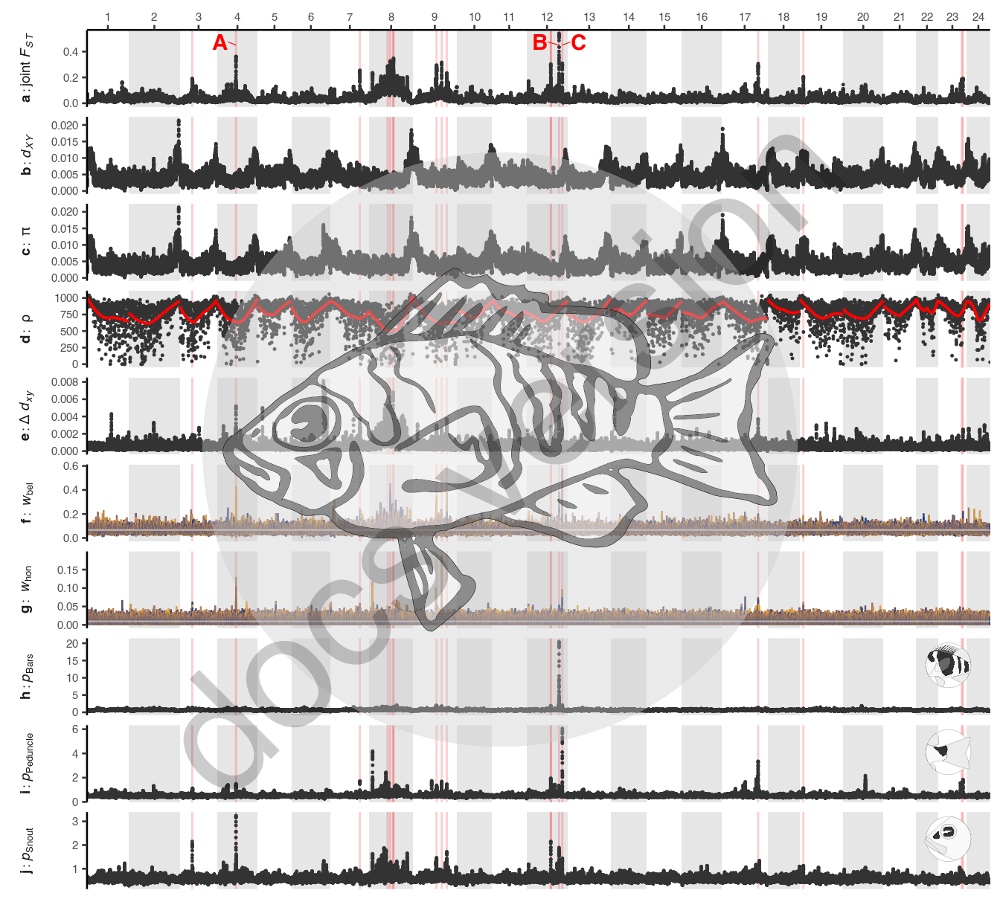

20 Figure 4
20.1 Summary
This is the accessory documentation of Figure 4.
The Figure can be recreated by running the R script plot_F4.R:
cd $BASE_DIR
Rscript --vanilla R/fig/plot_F4.R 2_analysis/dxy/50k/ \
2_analysis/fst/50k/multi_fst.50k.tsv.gz 2_analysis/GxP/50000/ \
2_analysis/summaries/fst_outliers_998.tsv \
https://raw.githubusercontent.com/simonhmartin/twisst/master/plot_twisst.R \
2_analysis/twisst/weights/ ressources/plugin/trees/ \
2_analysis/fasteprr/step4/fasteprr.all.rho.txt.gz \
2_analysis/summaries/fst_globals.txt20.2 Details of plot_F4.R
In the following, the individual steps of the R script are documented. It is an executable R script that depends on the accessory R package GenomicOriginsScripts and on the package hypoimg and hypogen.
20.2.1 Config
The scripts start with a header that contains copy & paste templates to execute or debug the script:
#!/usr/bin/env Rscript
# run from terminal:
# Rscript --vanilla R/fig/plot_F4.R 2_analysis/dxy/50k/ \
# 2_analysis/fst/50k/multi_fst.50k.tsv.gz 2_analysis/GxP/50000/ \
# 2_analysis/summaries/fst_outliers_998.tsv \
# https://raw.githubusercontent.com/simonhmartin/twisst/master/plot_twisst.R \
# 2_analysis/twisst/weights/ ressources/plugin/trees/ \
# 2_analysis/fasteprr/step4/fasteprr.all.rho.txt.gz \
# 2_analysis/summaries/fst_globals.txt
# ===============================================================
# This script produces Figure 4 of the study "Ancestral variation, hybridization and modularity
# fuel a marine radiation" by Hench, Helmkampf, McMillan and Puebla
# ---------------------------------------------------------------
# ===============================================================
# args <- c('2_analysis/dxy/50k/','2_analysis/fst/50k/multi_fst.50k.tsv.gz',
# '2_analysis/GxP/50000/', '2_analysis/summaries/fst_outliers_998.tsv',
# 'https://raw.githubusercontent.com/simonhmartin/twisst/master/plot_twisst.R',
# '2_analysis/twisst/weights/', 'ressources/plugin/trees/',
# '2_analysis/fasteprr/step4/fasteprr.all.rho.txt.gz', '2_analysis/summaries/fst_globals.txt')
# script_name <- "R/fig/plot_F4.R"The next section processes the input from the command line.
It stores the arguments in the vector args.
The needed R packages are loaded and the script name and the current working directory are stored inside variables (script_name, plot_comment).
This information will later be written into the meta data of the figure to help us tracing back the scripts that created the figures in the future.
Then we drop all the imported information besides the arguments following the script name and print the information to the terminal.
args <- commandArgs(trailingOnly = FALSE)
# setup -----------------------
library(GenomicOriginsScripts)
library(hypoimg)
library(hypogen)
cat('\n')
script_name <- args[5] %>%
str_remove(.,'--file=')
plot_comment <- script_name %>%
str_c('mother-script = ',getwd(),'/',.)
args <- process_input(script_name, args)#> ── Script: R/fig/plot_F4.R ────────────────────────────────────────────
#> Parameters read:
#> ★ 1: 2_analysis/dxy/50k/
#> ★ 2: 2_analysis/fst/50k/multi_fst.50k.tsv.gz
#> ★ 3: 2_analysis/GxP/50000/
#> ★ 4: 2_analysis/summaries/fst_outliers_998.tsv
#> ★ 5: https://raw.githubusercontent.com/simonhmartin/twisst/master/plot_twisst.R
#> ★ 6: 2_analysis/twisst/weights/
#> ★ 7: ressources/plugin/trees/
#> ★ 8: 2_analysis/fasteprr/step4/fasteprr.all.rho.txt.gz
#> ★ 9: 2_analysis/summaries/fst_globals.txt
#> ────────────────────────────────────────── /current/working/directory ──The directories for the different data types are received and stored in respective variables. Also, we source an external r script from the original twisst github repository that we need to import the twisst data:
# config -----------------------
dxy_dir <- as.character(args[1])
fst_file <- as.character(args[2])
gxp_dir <- as.character(args[3])
outlier_table <- as.character(args[4])
twisst_script <- as.character(args[5])
w_path <- as.character(args[6])
d_path <- as.character(args[7])
recombination_file <- as.character(args[8])
global_fst_file <- as.character(args[9])
source(twisst_script)20.2.2 Data import
Figure 4 contains quite a lot of different data sets. The main part of this script is just importing and organizing all of this data: In the following we’ll go step by step through the import of:
- differentiation data (\(F_{ST}\))
- divergence data (\(d_{XY}\), also containing diversity data - \(\pi\))
- genotype \(\times\) phenotype association data (\(p_{Wald}\))
- recombination data (\(\rho\))
- topology weighting data
We start with the import of the \(F_{ST}\) data, specifically the data set containing the genome wide \(F_{ST}\) computed for all populations simultaneously (joint \(F_{ST}\)).
The data file is read, the columns are renamed and the genomic positions are added.
Then, only the genomic positions and the \(F_{ST}\) columns are selected and a window column is added for faceting in ggplot().
# start script -------------------
# import fst data
fst_data <- vroom::vroom(fst_file, delim = '\t') %>%
select(CHROM, BIN_START, BIN_END, N_VARIANTS, WEIGHTED_FST) %>%
setNames(., nm = c('CHROM', 'BIN_START', 'BIN_END', 'n_snps', 'fst') ) %>%
add_gpos() %>%
select(GPOS, fst) %>%
setNames(., nm = c('GPOS','value')) %>%
mutate(window = str_c('bold(',project_case('a'),'):joint~italic(F[ST])'))Next, we import the \(d_{XY}\) data. Here we are importing all 28 pairwise comparisons, so we first collect all the file paths and the iterate the data import over all files.
# locate dxy data files
dxy_files <- dir(dxy_dir)
# import dxy data
dxy_data <- str_c(dxy_dir,dxy_files) %>%
purrr::map(get_dxy) %>%
bind_rows() %>%
select(N_SITES:GPOS, run) %>%
mutate(pop1 = str_sub(run,1,6),
pop2 = str_sub(run,8,13))From this data, we compute the divergence difference (\(\Delta d_{XY}\)).
# compute delta dxy
dxy_summary <- dxy_data %>%
group_by(GPOS) %>%
summarise(delta_dxy = max(dxy)-min(dxy),
sd_dxy = sd(dxy),
delt_pi = max(c(max(PI_POP1),max(PI_POP2))) - min(c(min(PI_POP1),min(PI_POP2)))) %>%
ungroup() %>%
setNames(., nm = c('GPOS',
str_c('bold(',project_case('e'),'):\u0394~italic(d[xy])'),
str_c('bold(',project_case('e'),'):italic(d[xy])~(sd)'),
str_c('bold(',project_case('e'),'):\u0394~italic(\u03C0)'))) %>%
gather(key = 'window', value = 'value',2:4) %>%
filter(window == str_c('bold(',project_case('e'),'):\u0394~italic(d[xy])'))Then we import the genotype \(\times\) phenotype association data. For this, we list all the traits we want to include and then iterate the import function over all traits. We combine the data sets and transform the table to long format.
# set G x P traits to be imported
traits <- c("Bars.lm.50k.5k.txt.gz", "Peduncle.lm.50k.5k.txt.gz", "Snout.lm.50k.5k.txt.gz")
# set trait figure panels
trait_panels <- c(Bars = str_c('bold(',project_case('h'),')'),
Peduncle = str_c('bold(',project_case('i'),')'),
Snout = str_c('bold(',project_case('j'),')'))
# import G x P data
gxp_data <- str_c(gxp_dir,traits) %>%
purrr::map(get_gxp) %>%
join_list() %>%
gather(key = 'window', value = 'value',2:4)Then, we import the genome wide \(F_{ST}\) summary for all 28 pair wise comparisons to be able to pick a divergence data set of an intermediately differentiated species pair (the species pair of rank 15, close to 14.5 - the median of rank 1 to 28).
# import genome wide Fst data summary --------
globals <- vroom::vroom(global_fst_file, delim = '\t',
col_names = c('loc','run','mean','weighted')) %>%
mutate(run = str_c(str_sub(run,1,3),loc,'-',str_sub(run,5,7),loc),
run = fct_reorder(run,weighted))
# dxy and pi are only shown for one exemplary population (/pair)
# select dxy pair run (15 is one of the two central runs of the 28 pairs)
# here, the 15th lowest fst value is identified as "selector"
selectors_dxy <- globals %>%
arrange(weighted) %>%
.$weighted %>%
.[15]
# the dxy population pair corresponding to the selector is identified
select_dxy_runs <- globals %>%
filter(weighted %in% selectors_dxy) %>%
.$run %>% as.character()
# then thne dxy data is subset based on the selector
dxy_select <- dxy_data %>%
filter(run %in% select_dxy_runs) %>%
mutate(window = str_c('bold(',project_case('b'),'): italic(d[XY])'))The \(d_{XY}\) data set includes also \(\pi\) of the involved populations. We first extract the diversity data for each population (pop1 & pop2), combine them and compute the statistics needed for ranking the populations based on their diversity.
# the pi data is filtered on a similar logic to the dxy data
# first a table with the genome wide average pi for each population is compiled
# (based on the first populations from the dxy data table
# which contains pi for both populations)
pi_summary_1 <- dxy_data %>%
group_by(pop1,run) %>%
summarise(avg_pi = mean(PI_POP1)) %>%
ungroup() %>%
purrr::set_names(., nm = c('pop','run','avg_pi'))
# the mean genome wide average pi is compiled for all the second populations
# from the dxy data
# then, the average of all the comparisons is computed for each population
pi_summary <- dxy_data %>%
group_by(pop2,run) %>%
summarise(avg_pi = mean(PI_POP2)) %>%
ungroup() %>%
purrr::set_names(., nm = c('pop','run','avg_pi')) %>%
bind_rows(pi_summary_1) %>%
group_by(pop) %>%
summarise(n = length(pop),
mean_pi = mean(avg_pi),
min_pi = min(avg_pi),
max_pi = max(avg_pi),
sd_pi = sd(avg_pi)) %>%
arrange(n)Then, we determine an intermediately diverse candidate of our 14 populations (rank 7, again: \(7 \approx median(1:14)\)) and average over the diversities estimated in all pairwise comparisons this population was involved in.
# one of the central populations with respect to average genome
# wide pi is identified
# for this, the 7th lowest pi value of the 14 populations is
# determined as "selector"
selectors_pi <- pi_summary %>%
.$mean_pi %>%
sort() %>%
.[7]
# the respective population is identified
select_pi_pops <- pi_summary %>%
filter(mean_pi %in% selectors_pi) %>%
.$pop %>% as.character()
# then the dxy data is subset by that population and the average pi over
# all pair-wise runs is calculated for each window
pi_data_select <- dxy_data %>%
select(GPOS, PI_POP1, pop1 )%>%
purrr::set_names(., nm = c('GPOS','pi','pop')) %>%
bind_rows(.,dxy_data %>%
select(GPOS, PI_POP2, pop2 )%>%
purrr::set_names(., nm = c('GPOS','pi','pop'))) %>%
group_by(GPOS,pop) %>%
summarise(n = length(pop),
mean_pi = mean(pi),
min_pi = min(pi),
max_pi = max(pi),
sd_pi = sd(pi)) %>%
filter(pop %in% select_pi_pops) %>%
mutate(window = str_c('bold(',project_case('c'),'):~\u03C0'))The import of the recombination data is pretty straight forward: Reading one file, adding genomic position and window column for faceting.
# import recombination data
recombination_data <- vroom::vroom(recombination_file,delim = '\t') %>%
add_gpos() %>%
mutate(window = str_c('bold(',project_case('d'),'):~\u03C1'))Then we import the topology weighting data. This is done once per location, the data sets are combined and specific columns are selected: The gnomic position, the topology number (format: three digits with leading zeros, hence “topo3”), relative topology rank ranging from 0 to 1, the faceting column and the actual weight data.
We also create a dummy tibble that contains the null expectation of the topology weight for the two locations (1/n, with n = number of possible topologies - n = 15 for Belize and 105 for Honduras).
# import topology weighting data
twisst_data <- tibble(loc = c('bel','hon'),
panel = c('f','g') %>% project_case() %>% str_c('bold(',.,')')) %>%
purrr::pmap(match_twisst_files) %>%
bind_rows() %>%
select(GPOS, topo3,topo_rel,window,weight)
# the "null-weighting" is computed for both locations
twisst_null <- tibble(window = c(str_c('bold(', project_case('f'),'):~italic(w)[bel]'),
str_c('bold(', project_case('g'),'):~italic(w)[hon]')),
weight = c(1/15, 1/105))We create a single data set for \(d_{XY}\), \(F_{ST}\) and genotype \(\times\) phenotype data.
# combine data types --------
data <- bind_rows(dxy_summary, fst_data, gxp_data)Then we load the positions of the the \(F_{ST}\) outlier windows, select the focal outliers that will receive individual labels and create a tibble and two parameters for the label placement within the plot.
# import fst outliers
outliers <- vroom::vroom(outlier_table, delim = '\t')
# the focal outlier IDs are set
outlier_pick <- c('LG04_1', 'LG12_3', 'LG12_4')
# the table for the outlier labels is created
outlier_label <- outliers %>%
filter(gid %in% outlier_pick) %>%
mutate(label = letters[row_number()] %>% project_inv_case(),
x_shift_label = c(-1,-1.2,1)*10^7,
gpos_label = gpos + x_shift_label,
gpos_label2 = gpos_label - sign(x_shift_label) *.5*10^7,
window = str_c('bold(',project_case('a'),'):joint~italic(F[ST])'))
# the y height of the outlier labels and the corresponding tags is set
outlier_y <- .45
outlier_yend <- .475We prepare a set of trait annotations for the genotype \(\times\) phenotype association panels.
# the icons for the traits of the GxP are loaded
trait_tibble <- tibble(window = c("bold(h):italic(p)[Bars]",
"bold(i):italic(p)[Peduncle]",
"bold(j):italic(p)[Snout]"),
grob = hypo_trait_img$grob_circle[hypo_trait_img$trait %in% c('Bars', 'Peduncle', 'Snout')])20.2.3 Plotting
Finally it is time to put the pieces together with one giant ggplot():
# finally, the figure is being put together
p_done <- ggplot()+
# add gray/white LGs background
geom_hypo_LG()+
# the red highlights for the outlier regions are added
geom_vline(data = outliers, aes(xintercept = gpos), color = outlr_clr)+
# the tags of the outlier labels are added
geom_segment(data = outlier_label,
aes(x = gpos,
xend = gpos_label2, y = outlier_y, yend = outlier_yend),
color = alpha(outlr_clr,1),size = .2)+
# the outlier labels are added
geom_text(data = outlier_label, aes(x = gpos_label, y = outlier_yend, label = label),
color = alpha(outlr_clr,1), fontface = 'bold')+
# the fst, delta dxy and gxp data is plotted
geom_point(data = data, aes(x = GPOS, y = value),size = plot_size, color = plot_clr) +
# the dxy data is plotted
geom_point(data = dxy_select,aes(x = GPOS, y = dxy),size = plot_size, color = plot_clr)+
# the pi data is plotted
geom_point(data = pi_data_select, aes(x = GPOS, y = mean_pi),size = plot_size, color = plot_clr) +
# the roh data is plotted
geom_point(data = recombination_data, aes(x = GPOS, y = RHO),size = plot_size, color = plot_clr) +
# the smoothed rho is plotted
geom_smooth(data = recombination_data, aes(x = GPOS, y = RHO, group = CHROM),
color = 'red', se = FALSE, size = .7) +
# the topology weighting data is plotted
geom_line(data = twisst_data, aes(x = GPOS, y = weight, color = topo_rel), size = .4) +
# the null weighting is added
geom_hline(data = twisst_null, aes(yintercept = weight), color = rgb(1, 1, 1, .5), size = .4) +
# the trait icons are added
geom_hypo_grob(data = trait_tibble,
aes(grob = grob, angle = 0, height = .65),
inherit.aes = FALSE, x = .95, y = 0.65)+
# setting the scales
scale_fill_hypo_LG_bg() +
scale_x_hypo_LG()+
scale_color_gradient( low = "#f0a830ff", high = "#084082ff", guide = FALSE)+
# organizing the plot across panels
facet_grid(window~.,scales = 'free',switch = 'y', labeller = label_parsed)+
# tweak plot appreance
theme_hypo()+
theme(text = element_text(size = plot_text_size),
legend.position = 'bottom',
axis.title = element_blank(),
strip.text = element_text(size = plot_text_size),
strip.background = element_blank(),
strip.placement = 'outside')
The final figure is then exported using hypo_save().
# export figure 4
hypo_save(p_done, filename = 'figures/F4.png',
width = f_width,
height = f_width * .9,
type = "cairo",
comment = plot_comment)